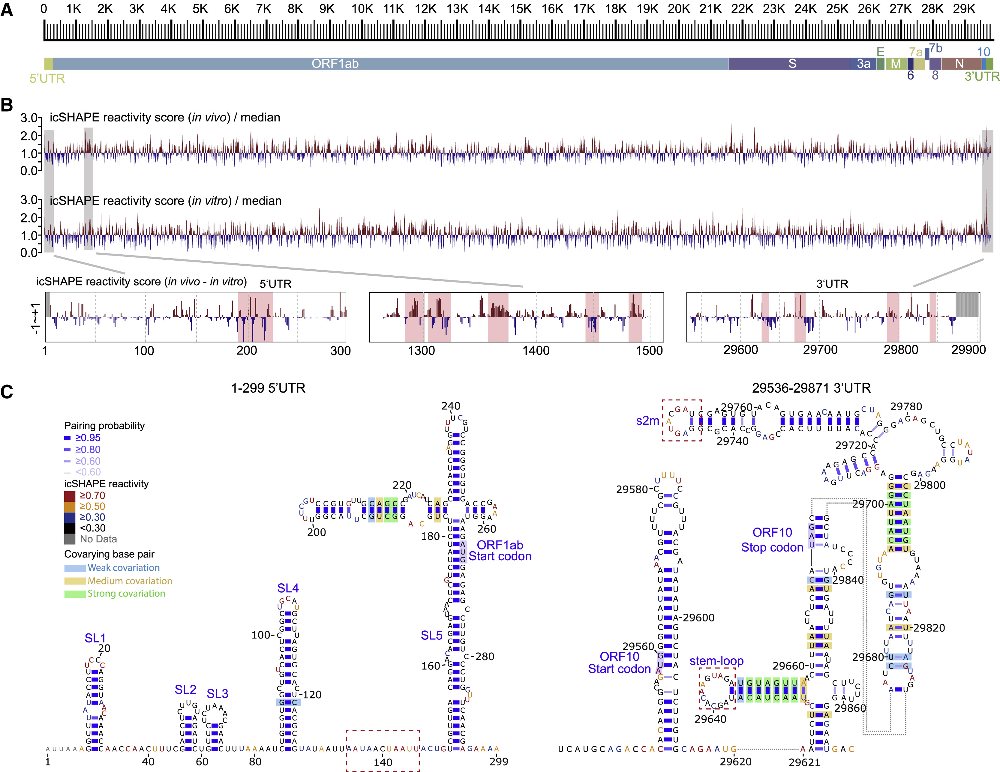
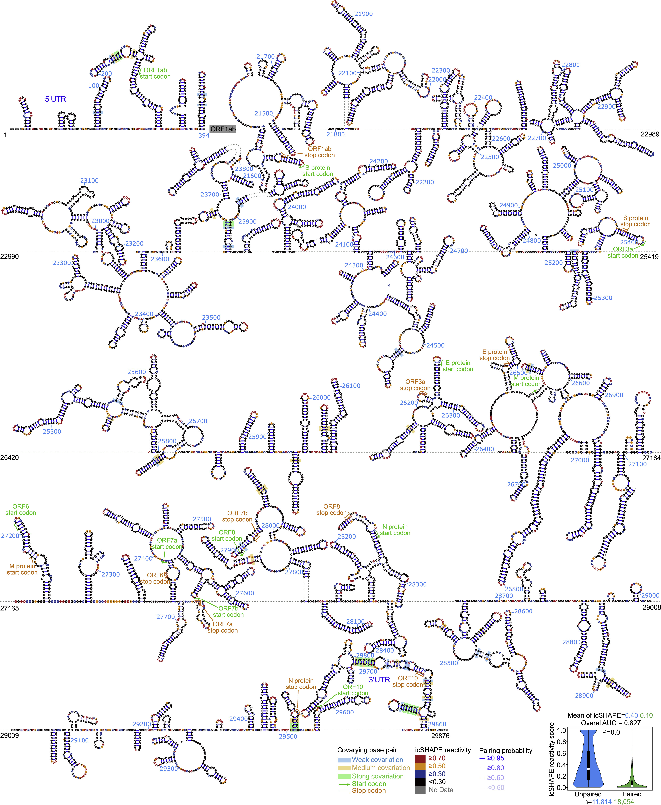

RNA
Genome Organization
The SARS-CoV-2 genome represents a genome-level view of RNA architecture, replication logic, and mutation flow across viral evolution. This provides the foundation for understanding how mutations propagate and how viral adaptation occurs at the sequence level.
SARS-CoV-2 contains a positive-sense, single-stranded RNA genome of about 30 kb. Beyond encoding proteins, this RNA also acts as a regulatory molecule whose folding state can influence replication, discontinuous transcription, translation efficiency, and interactions with host RNA-binding factors.
The genome includes ORF1ab, structural genes (S, E, M, N), accessory regions, and untranslated regions. During infection, subgenomic RNAs are generated to express structural proteins, including spike and nucleocapsid, and their local RNA structural contexts can shape how efficiently these transcripts are produced and translated.
Tracking structure-linked behavior across coding and non-coding regions helps separate stable regulatory elements from rapidly adapting regions under host and transmission pressures.
Whole-Genome RNA Structure Overview

This overview summarizes the SARS-CoV-2 RNA genome from the 5′ UTR through the 3′ UTR, pairing the genome map with icSHAPE reactivity profiles and highlighted regions where in vivo and in vitro folding patterns differ. It also includes comparative structural models for the untranslated termini.
Genome-Wide RNA Secondary Structure

This schematic presents the SARS-CoV-2 RNA structure across the short 5′ segment and the 3′ end of the genome, using icSHAPE reactivity to color the backbone and indicating likely base-paired and covarying positions. The embedded distributions summarize how reactivity varies across the displayed regions.
Subgenomic RNA Structure-Function Landscape

This panel shows how the structural state around the leader and body transcription-regulatory regions tracks with transcript abundance and translation efficiency. It emphasizes the relationship between local RNA flexibility and expression differences among subgenomic RNAs.
Spike RNA
The spike (S) gene is expressed from a subgenomic mRNA and contains local RNA elements that can influence translation, stability, and subgenomic transcription. Local secondary structure near the translation start site, the signal peptide, and the cleavage site can modulate ribosome scanning and co-translational folding. In addition, sequence-specific RNA motifs may affect packaging and interactions with N protein during assembly.
Mapping experiments and computational analyses show that spike-region RNA structure varies across conditions and can create local pauses or accessibility changes that affect spike expression and processing. When examining spike mutations, consider both amino-acid changes and their potential impact on local RNA folding and codon usage, which together shape expression and evolutionary selection.
Key studies mapping SARS-CoV-2 RNA structure and RNA–RNA interactions provide a useful background for spike-region analyses; see the references below for experimental and computational resources.
Download Variant Data
Select a variant to download RNA FASTA sequence data:
References
- [1] Sun, Lei, et al. In vivo structural characterization of the SARS-CoV-2 RNA genome identifies host proteins vulnerable to repurposed drugs. Cell 184(7), 1865-1883.e20 (2021). DOI, ScienceDirect.
- [2] Ziv, O. et al. The short- and long-range RNA-RNA interactome of SARS-CoV-2. Molecular Cell (2020). DOI.
- [3] Rangan, R., Zheludev, I. N. & Das, R. RNA genome conservation and secondary structure in SARS-CoV-2 and SARS-related viruses. RNA (2020). DOI.
- [4] Ziv, O. & O'Farrell, S. (2020). RNA–RNA interactions and architecture of the coronavirus genome: implications for packaging and regulation. Nat Rev Microbiol (2020).